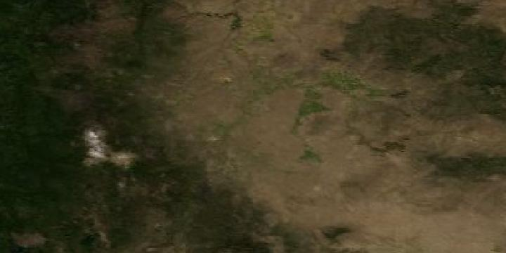
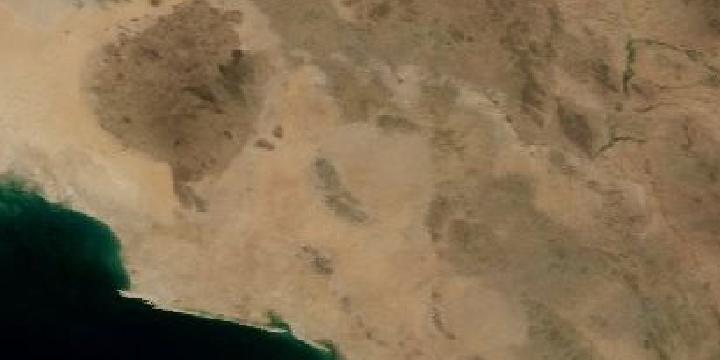
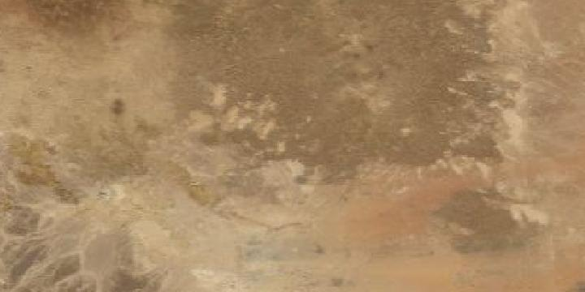
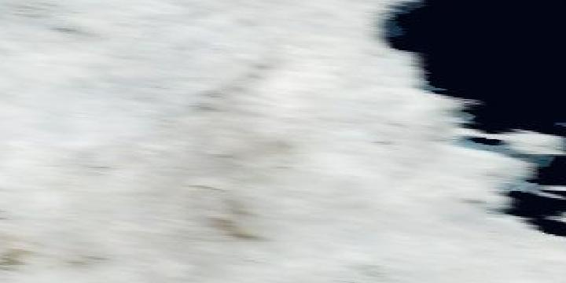
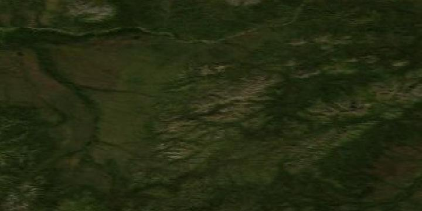

Two places picked from measured numbers alone, central Oregon and El Pinacate in Mexico, were Apollo field-geology training grounds in the 1960s. The analog catalogues in use today do not list them.
Search Candidates
These places are far from every known analog site and outside the four regions the challenge names (Antarctica, the Atacama, Iceland, Hawaii), yet they rank high for a lunar or Martian target. Each comes with what matches, what does not, and what it could be used to test. They are proposals, not validated analog sites.
Three surprises
Chott el Djerid (Martian salts) and Harrat ash Shaam (planetary pits) are not in our catalogue, yet the ranking put them near the top. Only afterwards did the literature show that researchers had already proposed or used them.
At the scale of orbital instruments, no Earth topsoil matches lunar FeO, TiO₂, K and Th together. Looking at whole rock instead, 25 of 59 lunar targets match fully: part of the gap is Earth weathering.
Eight candidates

Central Oregon (Bend and Newberry volcano)
44.19°N, 121.22°W · nearest known analog: Shifting Sands dune field/Christmas Valley sand dunes 117 km
Explore in 3D →- Found for
- Earth ceiling for the Artemis south-polar resource use is 0.80, reached by only 7 windows worldwide; this is one of them. The famous sites score lower: Ries and Lava Beds 0.60, Meteor Crater 0.30, Craters of the Moon 0.
- Literature and history
- Apollo astronauts trained in field geology here between 1964 and 1966 (lava flows, obsidian flows, pumice plains). The analog catalogues in use today do not list it: a forgotten training ground.
- Sampled life
- 6 public microbiome sequencing samples within 50 km, none from extreme settings.
- What it could test
- A chemistry reference for lunar feedstock, and walking and sampling on basalt and pumice ground.

El Pinacate volcanic field (Sonora, Mexico)
31.62°N, 113.04°W · nearest known analog: Gran Desierto 127 km
Explore in 3D →- Found for
- lunar skylights (subsurface use): rank 1 (score 100.0)
- What matches
- Bare groundRock type (ISRU feedstock)DrynessVolcanismLava-tube terrainCaves or minesField accessLogistics
- What does not
- Mean temperatureExtreme cold
- Literature and history
- NASA trained Apollo astronauts here from 1965 to 1970, including the Apollo 14 and Apollo 17 crews. The catalogues in use today do not list it.
- Sampled life
- No public microbiome sequencing sample within 50 km (nobody has sampled, which is not the same as no life).
- What it could test
- Maar craters and lava flows: methods to find skylights and tubes, communication and navigation underground.

Harrat ash Shaam basalt plateau (southern Syria and north-east Jordan)
31.98°N, 37.41°E · nearest known analog: Nahal Kasuy mega-ripple field 321 km
Explore in 3D →- Found for
- Marius Hills skylight: rank 1 (score 84.3)
- What matches
- Bare groundRock type (ISRU feedstock)Day-night swingDrynessLoose fine soilVolcanismLava-tube terrainField accessLogistics
- What does not
- Mean temperatureExtreme coldCaves or mines
- Literature and history
- Two conference abstracts (2018 and 2019) proposed its "jubot" depressions as analogs for planetary pits. The ranking had no access to that work and still put this plateau first for a lunar skylight. The present security situation may make fieldwork difficult.
- Sampled life
- No public microbiome sequencing sample within 50 km (nobody has sampled, which is not the same as no life).
- What it could test
- Telling how pits form (collapse or otherwise), and mobility on a basalt plateau.

Harrat Khaybar and Harrat Rahat lava fields (Saudi Arabia, near Medina)
23.44°N, 39.99°E · nearest known analog: Nahal Kasuy mega-ripple field 880 km
Explore in 3D →- Found for
- Marius Hills skylight: rank 2 (score 83.2)
- What matches
- Bare groundRock type (ISRU feedstock)Day-night swingNoon Sun elevationDrynessVolcanismLava-tube terrainField accessLogistics
- What does not
- Mean temperatureExtreme coldCaves or mines
- Literature and history
- We found no study that uses these fields as a lunar or Martian analog. They hold the Umm Jirsan lava tube, about 1.5 km long, the longest known in Saudi Arabia.
- Sampled life
- No public microbiome sequencing sample within 50 km (nobody has sampled, which is not the same as no life).
- What it could test
- Detecting tube entrances and skylights; basalt flows next to rhyolite domes.

Western Victoria Island, Canadian Arctic
72.04°N, 108.93°W · nearest known analog: Haughton impact structure, Devon Island 702 km
Explore in 3D →- Found for
- Artemis III south-polar region (Mons Mouton): rank 1 (score 64.7)
- What matches
- Bare groundRock type (ISRU feedstock)Extreme coldLow sunWater ice (resource)Loose fine soil
- What does not
- Mean temperatureDay-night swingImpact crateringField access
- Literature and history
- Little literature: one study uses Gossan Hill on the island as a Mars permafrost-mineral analog; none targets the lunar south pole.
- Sampled life
- No public microbiome sequencing sample within 50 km (nobody has sampled, which is not the same as no life).
- What it could test
- Navigation and camera exposure under a low Sun and long shadows, permafrost, polar logistics.

Sistan basin (Hamun lakes, Afghanistan and Iran)
31.26°N, 61.89°E · nearest known analog: Lut desert 306 km
Explore in 3D →- Found for
- Jezero crater: rank 2 (score 82.1)
- What matches
- Bare groundRock typeDay-night swingDrynessHydrated minerals (resource)Fluvial activityWater-limitedSaltsField access
- What does not
- Mean temperatureExtreme coldFreezingUltravioletLow pressure
- Literature and history
- We found no study that uses it as a Mars analog. It is an endorheic basin whose Hamun lakes grow and dry with river inflow; they almost dried out completely in the 1998–2005 drought.
- Sampled life
- No public microbiome sequencing sample within 50 km (nobody has sampled, which is not the same as no life).
- What it could test
- Dried lake beds, delta deposits, salts and wind erosion, to compare with the lake and delta deposits of Jezero.

Chott el Djerid salt pan (Tunisia)
34.13°N, 8.46°E · nearest known analog: Rio Tinto headwaters (Pena de Hierro, near Nerva) 1408 km
Explore in 3D →- Found for
- Jezero crater: rank 5 (score 80.8)
- What matches
- Bare groundRock typeDrynessHydrated minerals (resource)Fluvial activitySaltsField accessLogistics
- What does not
- Mean temperatureExtreme coldFreezingUltravioletLow pressure
- Literature and history
- Researchers already use it: a European team ran Mars-analog campaigns here in 2010–2012; its layered chloride salts resemble Martian chlorides, and drilling to 3.6 m still found microbes. It is not in our catalogue, yet the ranking put it in the top five.
- Sampled life
- No public microbiome sequencing sample within 50 km (nobody has sampled, which is not the same as no life).
- What it could test
- Biosignatures in salt deposits; detecting groundwater and salt crusts.

South-west Alaska (middle Kuskokwim River)
61.26°N, 158.65°W · nearest known analog: Valley of Ten Thousand Smokes (Katmai NP) 367 km
Explore in 3D →- Found for
- Earth ceiling for the Jezero resource use (FeO, K, Th) is 0.57, reached by only 15 windows worldwide; this is one cluster. All 10 catalogued Mars analogs with measured chemistry score 0.
- Literature and history
- We found no Mars-analog study of this area (other Alaskan sites, such as the Kobuk dunes and Katmai, have been studied).
- Sampled life
- No public microbiome sequencing sample within 50 km (nobody has sampled, which is not the same as no life).
- What it could test
- Earth reference samples for Martian surface chemistry, to calibrate instruments.
Ranks and Earth ceilings come from this site's fixed rules; literature and history are a hand check made on 13 November 2026. What Earth cannot reproduce (gravity, vacuum or thin air, radiation) holds for every candidate.